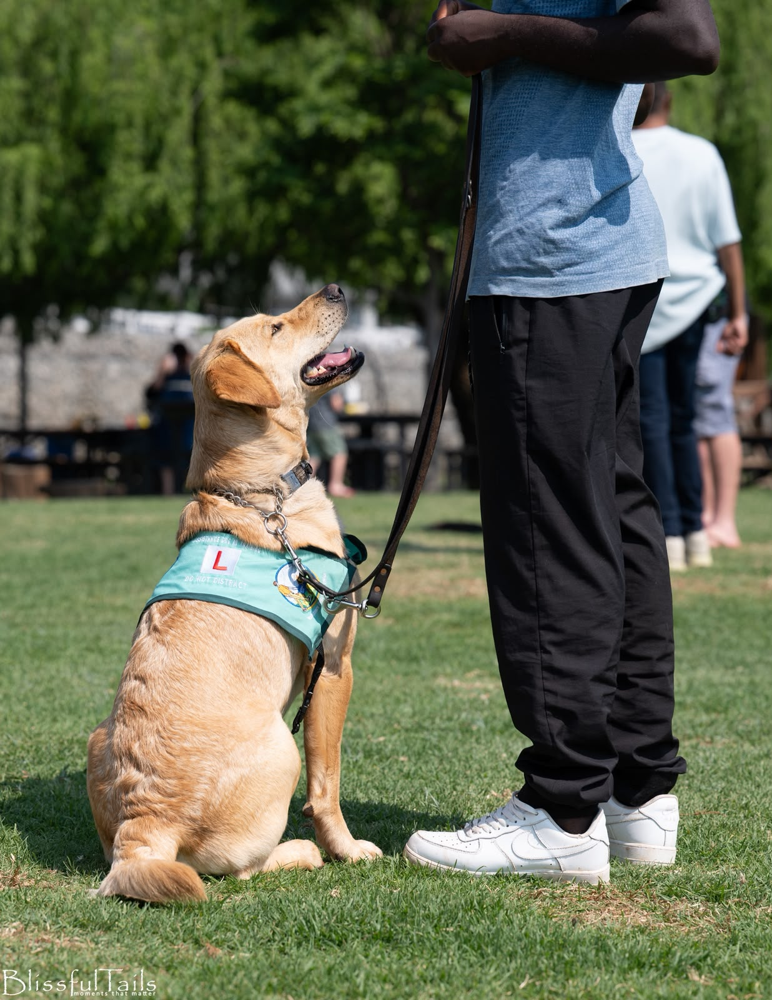
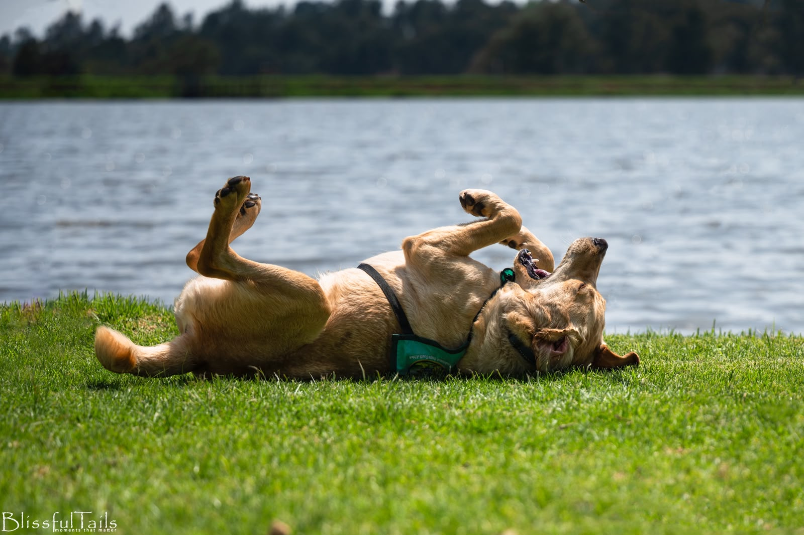
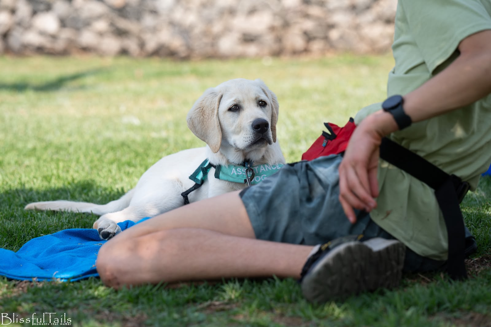
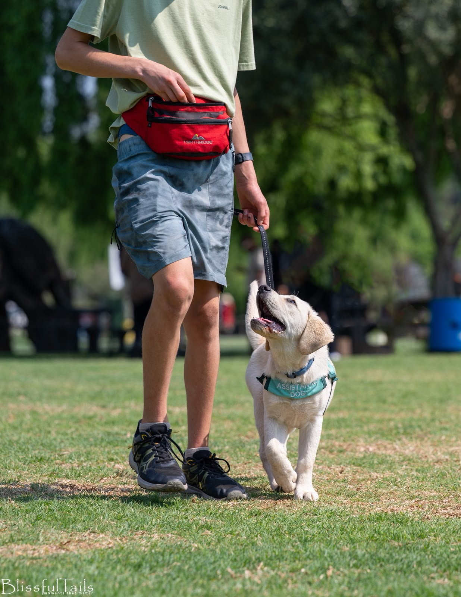
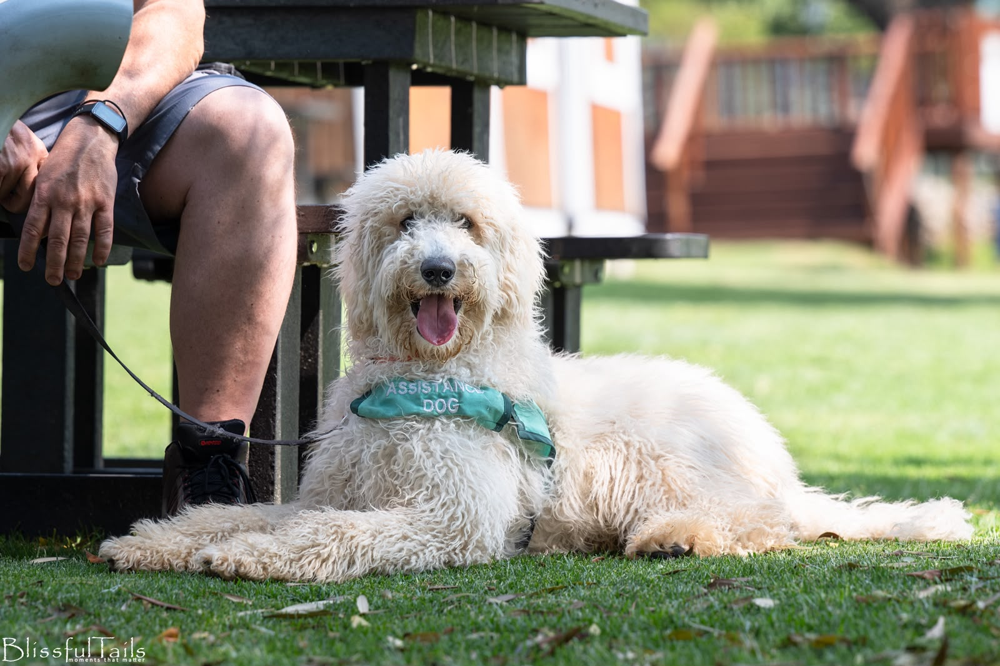
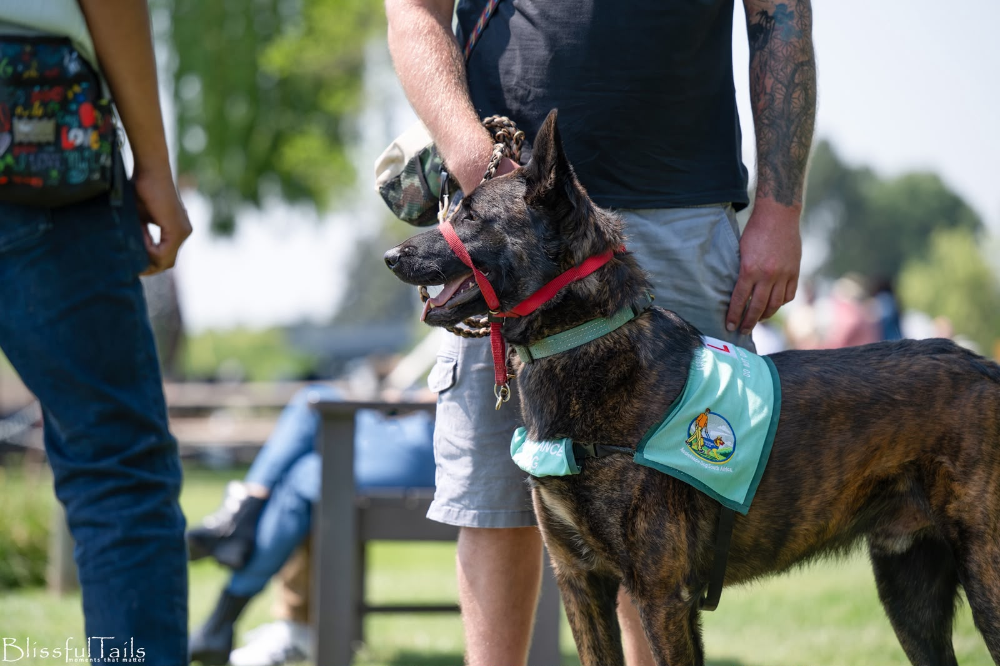
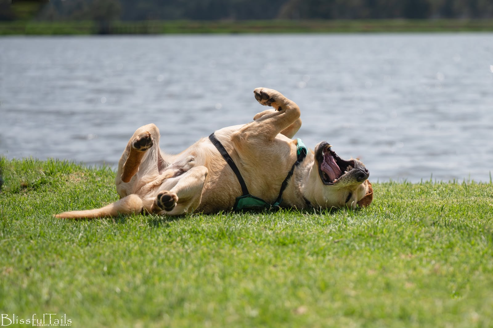

Help us train a dog who changes a life
Every donation goes towards the care, development and training of our dogs as they work towards becoming highly skilled assistance dogs.
More than a highly trained dog
An assistance dog is more than a highly trained dog. They become a trusted working partner, helping a person feel safer, more confident and more independent in everyday life.
At Assistance Dogs South Africa, we train and support dogs for a range of roles, including Guide Dogs, Mobility Dogs, Hearing Dogs, Autism Assistance Dogs, Psychiatric Alert Dogs, Medical Alert Dogs, Facility Dogs and Multipurpose Assistance Dogs.
Every dog is trained with care to meet the needs of the person they will support. This takes time, patience and dedication, from the early stages of training through to veterinary care, assessments and ongoing support.
Our programme is growing, and so is the need for assistance dogs. Your donation helps make this work possible. Donations go directly towards the everyday costs of training and caring for our dogs, including their food, veterinary expenses, training, equipment and ongoing development.
Whether you make a once-off donation or choose to support us regularly, your contribution helps give our dogs the care and preparation they need to become confident, capable working partners.

Three ways your gift makes a difference
Every donation contributes towards the care, development and training of our dogs as they work towards becoming highly skilled assistance dogs and providing greater independence to the people they are matched with.

Food & Enrichment
- Quality food and nutritional supplements
- Treats and training rewards
- Chews and appropriate recreational items
- Enrichment toys and puzzle feeders
- Food bowls and feeding equipment
- Toys for play, engagement and mental stimulation
- Enrichment activities that help develop confidence and problem-solving skills

Veterinary Care & Wellbeing
- Vaccinations and routine veterinary care
- Deworming and parasite prevention
- Tick and flea prevention
- Grooming and coat care
- Hip and elbow X-rays and screening
- Cardiac echocardiograms and heart screening
- Genetic and breed-specific health testing
- Physiotherapy and conditioning
- Preventative healthcare to help our dogs remain healthy, strong and physically prepared for their working lives

Training & Equipment
- Professional training and instructor time
- Training equipment and specialised training tools
- Assistance dog jackets and identification equipment
- Collars, leads and harnesses
- Scent containers and scent-training equipment
- Dumbbells and retrieving articles
- Ropes and tug equipment for teaching tasks such as opening doors, drawers and cupboards
- Equipment used to develop the skills and behaviours required for assistance work



Behind every dog we train is a person waiting for the opportunity to experience greater independence.
Your support helps us get them there.
Because independence is for everyone.
Donate by EFT
Use the details below for a once-off gift, or set up a recurring EFT to support us regularly. Please use “Donation” and your name as the payment reference.
Questions about donating? info@assistancedog.co.za